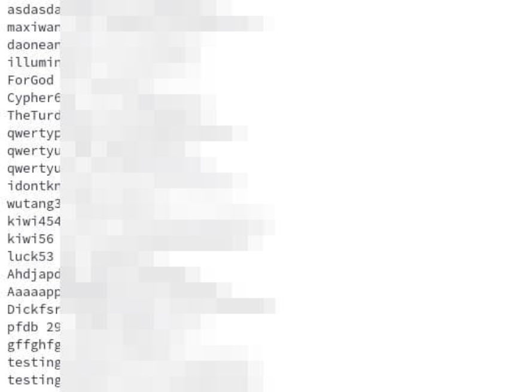
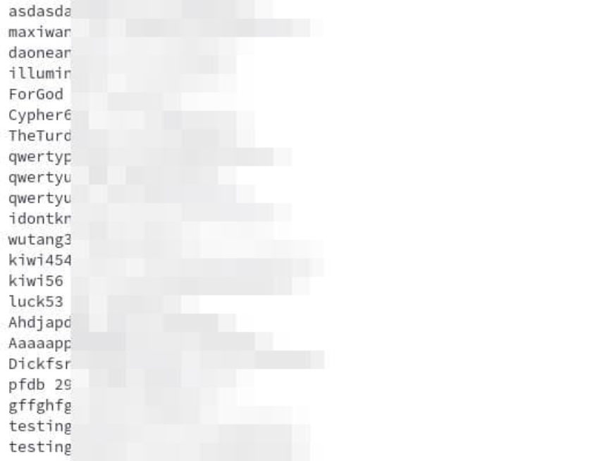

Darkweb Vendor DrugSource Arrested in France
~2 min read | Published on 2022-09-27, tagged Arrested, Darkweb-Vendor, General-News using 261 words.
French authorities arrested a man who allegedly sold more than a million euros worth of drugs on darkweb markets.
A 29-year-old resident of Nantes was arrested for allegedly selling drugs on the darkweb under the username “DrugSource.” According to the public prosecutor of Rennes, Philippe Astruc, the defendant completed more than 3,000 transactions on the darkweb between September 2020 and October 2021. He allegedly offered ecstasy, MDMA, heroin, and cocaine to customers.
“The profits generated by DrugSource as part of its illicit activities could exceed 1.5 million euros,” the public prosecutor said.
The investigation began in September 2020 after investigators with the National Directorate of Intelligence and Customs Investigations (DNRED) observed DrugSource’s “offers to sell narcotics on the Darknet and Telegram.”

Law enforcement officers identified a second man, a 24-year-old living in Sarthe, who allegedly worked as a logistician for the DrugSource drug trafficking operation.
Authorities arrested both suspects at their respective homes on September 20, 2022. During the execution of a search at the primary defendant’s house, police officers seized more than €450,000 in “goods and securities,” including €432,000 in cryptocurrency.
ouest-france.fr:
“Presented to the public prosecutor of Rennes on September 23, the suspects were the subject of a deferred appearance procedure and are being prosecuted before the criminal court for charges of trafficking in narcotics, possession of prohibited goods without supporting documents. regular, customs laundering and laundering of the proceeds of drug trafficking. They face a 10-year prison sentence.”
A trial has been scheduled for November 14. The primary defendant, who was convicted in 2020 for fraud-related crimes, will remain in pre-trial detention.
A 29-year-old resident of Nantes was arrested for allegedly selling drugs on the darkweb under the username “DrugSource.” According to the public prosecutor of Rennes, Philippe Astruc, the defendant completed more than 3,000 transactions on the darkweb between September 2020 and October 2021. He allegedly offered ecstasy, MDMA, heroin, and cocaine to customers.
“The profits generated by DrugSource as part of its illicit activities could exceed 1.5 million euros,” the public prosecutor said.
The investigation began in September 2020 after investigators with the National Directorate of Intelligence and Customs Investigations (DNRED) observed DrugSource’s “offers to sell narcotics on the Darknet and Telegram.”

Pictures included in DrugSource listings
Law enforcement officers identified a second man, a 24-year-old living in Sarthe, who allegedly worked as a logistician for the DrugSource drug trafficking operation.
Authorities arrested both suspects at their respective homes on September 20, 2022. During the execution of a search at the primary defendant’s house, police officers seized more than €450,000 in “goods and securities,” including €432,000 in cryptocurrency.
ouest-france.fr:
“Presented to the public prosecutor of Rennes on September 23, the suspects were the subject of a deferred appearance procedure and are being prosecuted before the criminal court for charges of trafficking in narcotics, possession of prohibited goods without supporting documents. regular, customs laundering and laundering of the proceeds of drug trafficking. They face a 10-year prison sentence.”
A trial has been scheduled for November 14. The primary defendant, who was convicted in 2020 for fraud-related crimes, will remain in pre-trial detention.